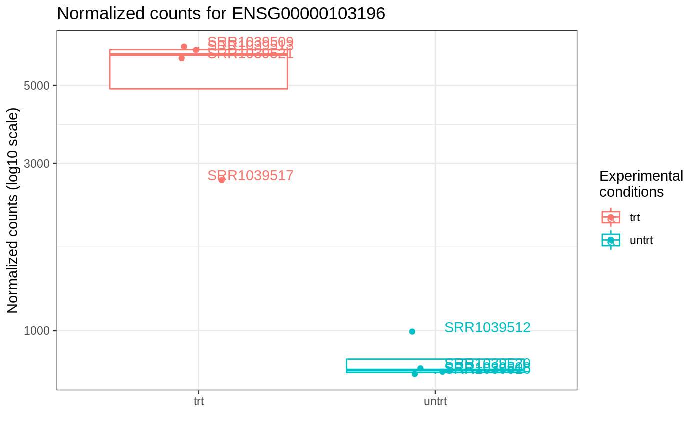

Plot for normalized counts of a single gene, with jittered points superimposed on the boxplot
ggplotCounts( dds, gene, intgroup = "condition", annotation_obj = NULL, transform = TRUE, labels_repel = TRUE )
| dds | A |
|---|---|
| gene | A character, specifying the name of the gene to plot |
| intgroup | Interesting groups: a character vector of
names in |
| annotation_obj | A |
| transform | Logical value, corresponding whether to have log scale y-axis or not. Defaults to TRUE. |
| labels_repel | Logical value. Whether to use |
An object created by ggplot
Note: this function relies on the plotCounts function of DESeq2,
therefore pseudocounts of 0.5 are added to each point
#> class: RangedSummarizedExperiment #> dim: 64102 8 #> metadata(1): '' #> assays(1): counts #> rownames(64102): ENSG00000000003 ENSG00000000005 ... LRG_98 LRG_99 #> rowData names(0): #> colnames(8): SRR1039508 SRR1039509 ... SRR1039520 SRR1039521 #> colData names(9): SampleName cell ... Sample BioSampledds_airway <- DESeq2::DESeqDataSetFromMatrix(assay(airway), colData = colData(airway), design=~cell+dex) ggplotCounts(dds_airway, gene = "ENSG00000103196", # CRISPLD2 in the original publication intgroup = "dex")